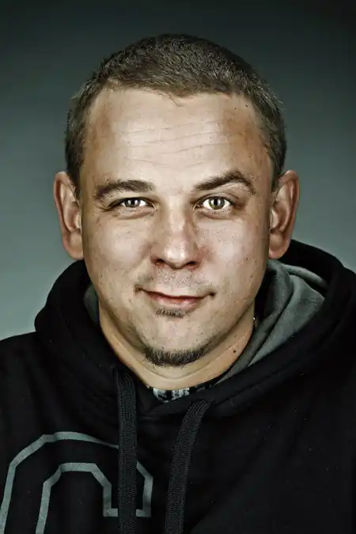
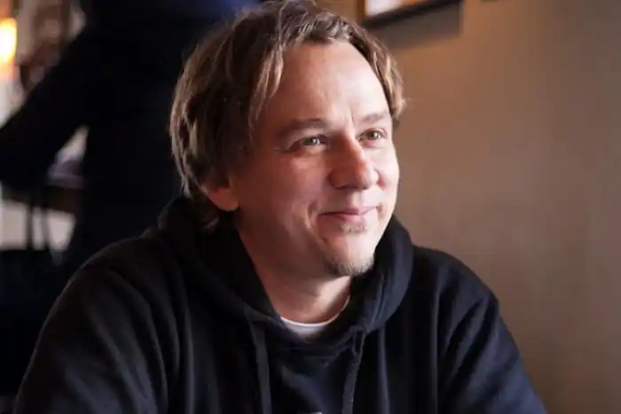
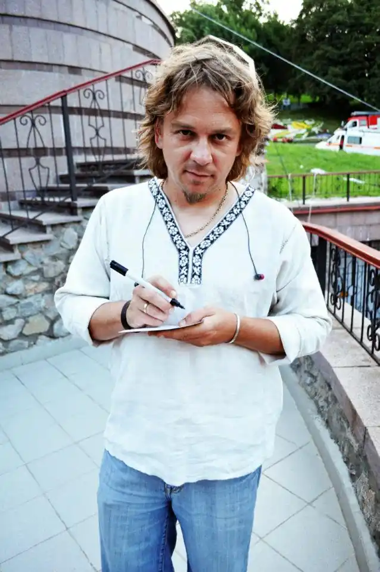

Народився в Харкові 6 квітня 1973 року. В дитинстві займався дзюдо, футболом тощо. Дитинство минуло в Євпаторії, де почав свою трудову діяльність, встиг попрацювати прибиральником на пляжі, санітаром, рятівником, страховим агентом, техніком-лаборантом, кіномеханіком, круп'є, журналістом. Мріяв стати футболістом київського "Динамо", але не склалось. Хоча футбол досі залишається улюбленим видом відпочинку:
Закінчив Київський міжнародний університет за фахом — журналіст-телевізійник. Вчився по 3 роки в Харківському державному технічному університеті радіоелектроніки та Харківській гуманітарній академії.
Музичної освіти не має. З 14 червня 1989 року є учасником гурту Танок на Майдані Конґо, автором текстів гурту. Крім того записав три сольні платівки, "MetaMoreFozzey" та "Mono MetaMoreFozzey" та "CD". Краще за все виходить писати восени та взимку, пісні про ці часи року, як він сам вважає, виходять особливо яскраві. Працював телеведучим на каналах "Privat-TV" у музичній програмі "RAP-обойма", "Новий канал" у ранковому шоу "Підйом", разом із Ігорем Пелихом вів на "ICTV" шоу "Галопом по Європам-2". З 2010 — один з ведучих програми "Третій тайм" на "ICTV". У 2013 році став ведучим програми "Великі перегони" на "1+1". Навесні 2016 року приєднався до патріотичного флешмобу #яЛюблюСвоюКраїну, опублікувавши відеозвернення, в якому розповів за що любить Україну. Станом на 2017 рік, видав п'ять романів прози та був спів-автором антології Письменники про футбол. Бібліографія: Книги російською Фоззи. "Ели воду из-под крана" Фоззи. "Winter Sport" Фоззи. "Пистон" (оповідання). (Входить до антології "Письменники про футбол") Фоззи. "Иглы и коньки" Фоззи. "Сопровождающие лица." Фоззи. "Гены Гены. 1952—1974" (оповідання). (Входить до антології "ДНК") Фоззи. "Темнеет рано". Книги українською Фоззі. "Гупало Василь. П'ять з половиною пригод".